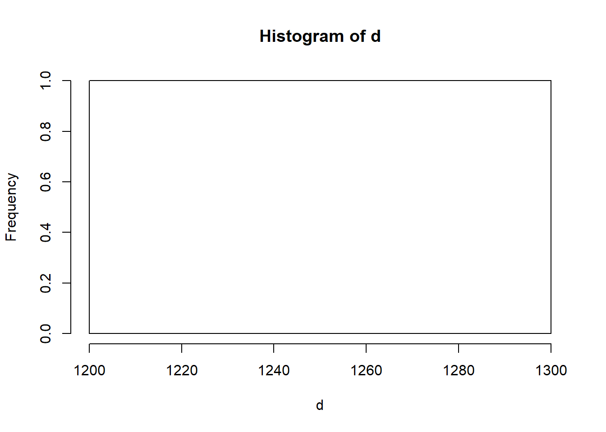
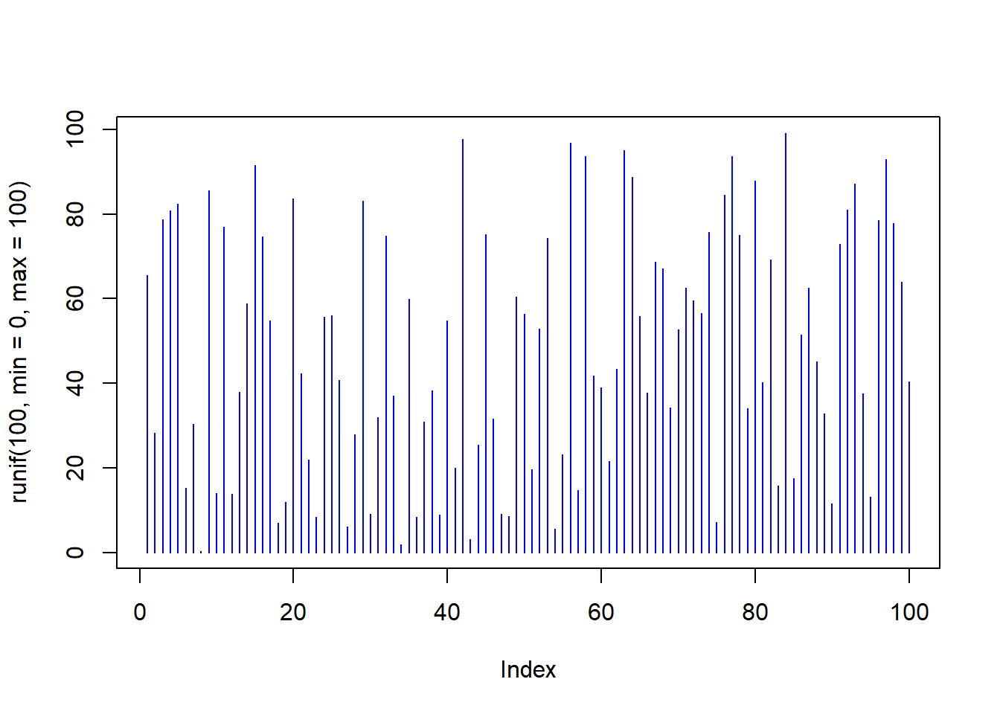

Dictionary
R Intrinsics
List of functions
General bits
help(topic) - command to search the help page
# help(sum)?topic - shorter command to search the help page
# ?sum
# ?ls
# ?dirls() - list objects
# ls(a)dir() - list the files in a directory or folder.
dir(path = ".", pattern = NULL, all.files = FALSE,
full.names = FALSE, recursive = FALSE,
ignore.case = FALSE, include.dirs = FALSE, no.. = FALSE)## [1] "_site.yml" "Breweries .csv"
## [3] "data.txt" "Dictionary.Rmd"
## [5] "docs" "Education.Rmd"
## [7] "images" "index.Rmd"
## [9] "Journal.Rmd" "Journal_cache"
## [11] "Journal_files" "keanu.txt"
## [13] "LabJournalWebsite.Rproj" "Links.Rmd"
## [15] "mat.RData" "matr.csv"
## [17] "README.md" "Research.Rmd"
## [19] "Research_cache" "Research_files"
## [21] "TestFile.txt"list.files() - different command, same output
list.files(path = ".", pattern = NULL, all.files = FALSE,
full.names = FALSE, recursive = FALSE,
ignore.case = FALSE, include.dirs = FALSE, no.. = FALSE)## [1] "_site.yml" "Breweries .csv"
## [3] "data.txt" "Dictionary.Rmd"
## [5] "docs" "Education.Rmd"
## [7] "images" "index.Rmd"
## [9] "Journal.Rmd" "Journal_cache"
## [11] "Journal_files" "keanu.txt"
## [13] "LabJournalWebsite.Rproj" "Links.Rmd"
## [15] "mat.RData" "matr.csv"
## [17] "README.md" "Research.Rmd"
## [19] "Research_cache" "Research_files"
## [21] "TestFile.txt"Input and output
save() - writes an external representation of R objects to a file
save(…, list = character(), file = stop(“‘file’ must be specified”), ascii = FALSE, version = NULL, envir = parent.frame(), compress = isTRUE(!ascii), compression_level, eval.promises = TRUE, precheck = TRUE)
# save(mat, file = "mat.RData")load()- Reload datasets written with the function save. load(file, envir = parent.frame(), verbose = FALSE)
# load(file = "mat.RData")data()- Loads specified data sets, or list the available data sets. data(…, list = character(), package = NULL, lib.loc = NULL, verbose = getOption(“verbose”), envir = .GlobalEnv)
# data(file = mat.RData)
# datalibrary() - load and attach add-on packages
library(ggplot2)read.table() - Reads a file in table format and creates a data frame from it, with cases corresponding to lines and variables to fields in the file.
read.csv() - Reads a .csv file
scan() - Read data into a vector or list from the console or file.
(x <- scan("https://stats.idre.ucla.edu/stat/data/scan.txt", what = list(age = 0,
name = "")))## $age
## [1] 12 24 35 20
##
## $name
## [1] "bobby" "kate" "david" "michael"print() = lists data, vectors, etc **can also be used as you are trying to de-bug
a<- c(1:5)
print(a)## [1] 1 2 3 4 5cat() - outputs the objects, concatenating the representations cat is useful for producing output in user-defined functions. It converts its arguments to character vectors, concatenates them to a single character vector, appends the given sep = string(s) to each element and then outputs them.
write.table() - prints data into a file
# write.table(b & d)Data Creation
c() - combine. how we can add numbers to a vector
# a<- c(a, "cat", "dog", "Pickles")from:to (where from and to are replaced with numbers, e.g. 1:10)
# d<-c(21, 22, 23, 24, 25, 25, 8, 83, 7, 85, 3,2,6)
# d<-c(3:7, 10)
# 1:10seq() - generate a sequence of numbers
seq(20)## [1] 1 2 3 4 5 6 7 8 9 10 11 12 13 14 15 16 17 18 19 20rep() - replicate the values in x
x<-c (1, 2, 3, 4)
rep(x)## [1] 1 2 3 4data.frame() - creates data frames, tightly coupled collections of variables which share many of the properties of matrices and of lists, used as the fundamental data structure by most of R’s modeling software.
x<-c (1, 2, 3, 4)
y<-c(a, b, c, d)
data.frame(x, y)## Error in (function (..., row.names = NULL, check.rows = FALSE, check.names = TRUE, : arguments imply differing number of rows: 1, 0list() - prints the data in a variable
list(a)## [[1]]
## [1] 1 2 3 4 5matrix() - creates a matrix matrix(data = NA, nrow = 1, ncol = 1, byrow = FALSE, dimnames = NULL)
hundreds <- c(matrix(data = 1:100, nrow = 10, ncol = 10))factor() - The function factor is used to encode a vector as a factor (the terms ‘category’ and ‘enumerated type’ are also used for factors). If argument ordered is TRUE, the factor levels are assumed to be ordered. For compatibility with S there is also a function ordered.
rbind() - Take a sequence of vector, matrix or data-frame arguments and combine by rows, respectively.
cbind() - Same as before but combines by columns
Slicing and extracting data
indexing vectors
x[n] nth element
b[2]## [1] 4x[-n] all but nth element
b[-2]## [1] 2 4 6x[1:n] first n elements
x[1:6]## [1] 1 2 3 4 NA NAx[-(1:n)] elements from n+1 to the end
a[-(1:3)]## [1] 4 5x[c(1,4,2)] specific elements
AllNumbers[c(4,5, 6)]## [1] 4 5 6x[“name”] elements named “name”
hey<-c("hi", "hey", "hello")
hey["hey"]## [1] NAx[x>3] all elements greater than 3
x[x>3]## [1] 4x[x > 3 & x < 5] all elements between 3 and 5 - such as if you want items 5-10
x[x %in% c(“a”,“and”,“the”)] all elements in given set
Indexing lists
x[n] list with elements n
y[2]## [[1]]
## [1] 2x[[n]] nt h element of the list
y[[5]]## [1] 5x[[“name”]] element of the list named “name”
x$name id.
Indexing matrices
x[i,j] element at row i, column j
hundreds[1,2]## Error in hundreds[1, 2]: incorrect number of dimensionsx[i,] row i
hundreds[2,] ## Error in hundreds[2, ]: incorrect number of dimensionsx[,j] column j - list elements in the column
x[,c(1,3)] columns 1 and 3 - same for multiple columns
x[“name”,] row named “name” - same for row/column with a character name
Indexing data frames (matrix indexing plus the following)
x[[“name”]] column named “name”
x$nameid.
Variable conversion
as.data.frame(x) - Functions to check if an object is a data frame, or coerce it if possible.
as.numeric(x) - creates or coerces objects to numeric
as.logical(x) - Create or test for objects of type “logical”, and the basic logical constants.
as.character(x) - Create or test for objects of type “logical”, and the basic logical constants.
Variable information
is.na(x) - indicates which elements are missing
is.na(a)## [1] FALSE FALSE FALSE FALSE FALSEis.null(x) - often returned by expressions and functions whose value is undefined.
is.null(hey)## [1] FALSEis.data.frame(x) - to check if an object is a data frame or coerse it if possible
is.numeric(x) - general test of an object being interpretable as number
is.character(x) - is an object interpretable as characters
length(x) - number of items in a variable
dim(x) - dimensions of a matrix
dim(hundreds)## NULLdimnames(x) - retrieve or set the dimension of an object
nrow(x) - number of rows of an array
ncol(x) - number of columns of an array
class() - classify an object
attributes() - list object’s attributes
Data selection and manipulation
which.max() - Determines the location, i.e., index of the (first) maximum of a numeric (or logical) vector
which.max(d)## [1] 1which.min() - same but for the minimum value
which.min(d)## [1] 1which() - which indices are true
which(b==d)## integer(0)sort() - Sort (or order) a vector or factor (partially) into ascending or descending order.
sort(d)## [1] 1227unique() - what are the unique/nonrepeated values in a string
b<-c(2, 2, 4, 5, 64, 8, 1, 6, 9)
unique(b)## [1] 2 4 5 64 8 1 6 9table() - create a table
sample() - generate random sample
sample(1:100, 99)## [1] 61 30 95 36 76 47 49 50 26 97 17 52 34 94 77 87 51
## [18] 15 25 74 80 56 66 2 79 33 82 38 42 63 90 20 96 72
## [35] 73 8 85 70 40 10 45 5 11 39 21 89 48 54 100 62 18
## [52] 81 35 1 60 84 24 71 14 67 29 3 9 65 7 43 44 19
## [69] 64 22 4 59 68 93 12 41 92 98 23 69 13 88 57 37 58
## [86] 99 53 16 6 83 75 31 78 46 28 86 32 91 55Math
max() - lists the maximum number in a string
vector<- c(1, 2, 3, 4, 5)
max(vector)## [1] 5min()- lists the maximum number in a string
min(vector)## [1] 1range() - lists the min and max of a string
range(vector)## [1] 1 5range(a)## [1] 1 5sum() - adds the values
sum(vector)## [1] 15sum(a)## [1] 15mean() - average
mean(vector)## [1] 3median() - middle value
median(vector)## [1] 3var() - variance
sd() - standard deviation
cor() - correlation of x and y
round() - round an integar
abs() - absolute value?
Matrices
t() - transpose of x
diag() - Extract or replace the diagonal of a matrix, or construct a diagonal matrix.
matr<- matrix(1:30, 5, 5)
diag(matr)## [1] 1 7 13 19 25rowSums()
rowSums(matr)## [1] 55 60 65 70 75colSums()
colSums(matr)## [1] 15 40 65 90 115rowMeans()
rowMeans(matr)## [1] 11 12 13 14 15colMeans()
colMeans(matr)## [1] 3 8 13 18 23Advanced Data processing
apply() - Returns a vector or array or list of values obtained by applying a function to margins of an array or matrix. apply(X, MARGIN, FUN, …)
print(matr)## [,1] [,2] [,3] [,4] [,5]
## [1,] 1 6 11 16 21
## [2,] 2 7 12 17 22
## [3,] 3 8 13 18 23
## [4,] 4 9 14 19 24
## [5,] 5 10 15 20 25apply(matr, 2, sum)## [1] 15 40 65 90 115apply(matr, 1, sort)## [,1] [,2] [,3] [,4] [,5]
## [1,] 1 2 3 4 5
## [2,] 6 7 8 9 10
## [3,] 11 12 13 14 15
## [4,] 16 17 18 19 20
## [5,] 21 22 23 24 25aggregate()- Splits the data into subsets, computes summary statistics for each, and returns the result in a convenient form.
by1<- list(AllNumbers%%100==0)
aggregate(AllNumbers, by1, sum)## Group.1 x
## 1 FALSE 495000
## 2 TRUE 5500Strings
paste() - Concatenate vectors after converting to character.
paste(hey)## [1] "hi" "hey" "hello"strsplit() - used to split up character strings - it’s called a string split
a<-"sdjflskdflksdjflkjs"
a[1]## [1] "sdjflskdflksdjflkjs"strsplit(a, split ="s")## [[1]]
## [1] "" "djfl" "kdflk" "djflkj"tolower() - Translate characters in character vectors, in particular from upper to lower case or vice versa.
toupper - same but opposite
toupper(hey)## [1] "HI" "HEY" "HELLO"Plotting
hist() - histogram
hist(d)
plot() plot.default will produce a simple scatter plot of X and Y type what type of plot should be drawn. Possible types are “p” for points, “l” for lines, “b” for both, “c” for the lines part alone of “b”, “o” for both ‘overplotted’, “h” for ‘histogram’ like (or ‘high-density’) vertical lines, “s” for stair steps, “S” for other steps, see ‘Details’ below, “n” for no plotting.
plot(a, d, type = "p", col = "red")## Warning in xy.coords(x, y, xlabel, ylabel, log): NAs introduced by coercion## Warning in min(x): no non-missing arguments to min; returning Inf## Warning in max(x): no non-missing arguments to max; returning -Inf## Error in plot.window(...): need finite 'xlim' values
Distributions
rnorm() - random normal distribution rnorm(n, mean = 0, sd = 1)
rnorm(50, mean = 25, sd = 5)## [1] 28.62120 31.87785 24.97010 26.76122 29.02145 20.35209 25.43828
## [8] 28.88711 19.93410 36.66701 23.61060 20.94751 27.54039 15.86888
## [15] 20.81386 26.87966 33.19964 16.78076 12.54641 20.31202 35.96974
## [22] 19.51745 30.46859 32.70635 31.35915 29.91559 27.47615 35.11472
## [29] 30.05782 32.45899 25.75940 26.03977 19.35071 23.08460 21.92686
## [36] 22.21662 19.17662 16.43743 18.71803 33.34933 23.49153 22.06826
## [43] 18.79471 24.17989 17.31619 26.61552 35.09217 19.48729 20.96977
## [50] 28.51864runif() - random uniform distribution runif(n, min = 0, max = 1)
plot(runif(100, min = 0, max = 100), type = "h", col = "blue")
Programming
show that you can define a function
AddFive <- function(x){
for (i in 1:10)
print ((x[i])+5)
}
AddFive(a)## Error in (x[i]) + 5: non-numeric argument to binary operatorshow that you can write a for loop
AllNumbers <- c(AllNumbers)
fivers <- 0
gofish <-0
for (val in AllNumbers) {
if(val %% 5 == 0)
fivers = fivers+1
}show that you can write a while loop
sample <- seq(20)
fivers <- 0
gofish <-0
lose<- 0
win <- 0
num <- 0
dollar <- 0
gold<-100
if (sample(1:6,1)%%2 == 0){
num <- num+1
dollar <- dollar +1
} else{
num <- num+1
}
while (num < 20){
print (gold)
gold = gold-1
if (gold <= 0){
break
}
}## [1] 100
## [1] 99
## [1] 98
## [1] 97
## [1] 96
## [1] 95
## [1] 94
## [1] 93
## [1] 92
## [1] 91
## [1] 90
## [1] 89
## [1] 88
## [1] 87
## [1] 86
## [1] 85
## [1] 84
## [1] 83
## [1] 82
## [1] 81
## [1] 80
## [1] 79
## [1] 78
## [1] 77
## [1] 76
## [1] 75
## [1] 74
## [1] 73
## [1] 72
## [1] 71
## [1] 70
## [1] 69
## [1] 68
## [1] 67
## [1] 66
## [1] 65
## [1] 64
## [1] 63
## [1] 62
## [1] 61
## [1] 60
## [1] 59
## [1] 58
## [1] 57
## [1] 56
## [1] 55
## [1] 54
## [1] 53
## [1] 52
## [1] 51
## [1] 50
## [1] 49
## [1] 48
## [1] 47
## [1] 46
## [1] 45
## [1] 44
## [1] 43
## [1] 42
## [1] 41
## [1] 40
## [1] 39
## [1] 38
## [1] 37
## [1] 36
## [1] 35
## [1] 34
## [1] 33
## [1] 32
## [1] 31
## [1] 30
## [1] 29
## [1] 28
## [1] 27
## [1] 26
## [1] 25
## [1] 24
## [1] 23
## [1] 22
## [1] 21
## [1] 20
## [1] 19
## [1] 18
## [1] 17
## [1] 16
## [1] 15
## [1] 14
## [1] 13
## [1] 12
## [1] 11
## [1] 10
## [1] 9
## [1] 8
## [1] 7
## [1] 6
## [1] 5
## [1] 4
## [1] 3
## [1] 2
## [1] 1show that you can write an if else statement
AllNumbers <- c(AllNumbers)
fivers <- 0
gofish <-0
for (val in AllNumbers) {
if(val %% 5 == 0){
fivers = fivers+1}else{gofish = gofish+1}
}Explain what return() does inside a function, show you can use it Many a times, we will require our functions to do some processing and return back the result. This is accomplished with the return() function in R.
outcome<- function(x){
if (fivers [x] < 4){
result <- "LOSER"
} else { result <- "WINNER"}
return(result)
}
fivers<-c(1, 2, 8, 3, 5, 4)
outcome(5)## [1] "WINNER"Explain what break() does, show you can use it A break statement is used inside a loop (repeat, for, while) to stop the iterations and flow the control outside of the loop.
fivers <- 0
gofish <-0
for (val in sample){
if(val %% 5 == 0){
fivers = fivers+1}else{gofish = gofish+1}
if (fivers == 4){
break
}
}Installing some packages
Use the packages tab in R-studio to install these packages. You will need to be connected to the internet when you do this. If you are installing on your laptop, or on R-studio Cloud, then these packages will not need to installed again.
ggplot2 - DONE dplyr - DONE shiny - DONE data.table - DONE reshape2 - DONE stringr - DONE